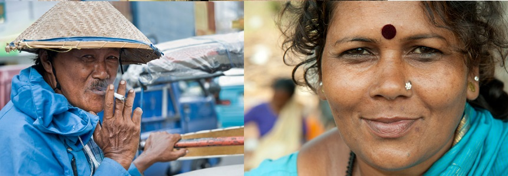
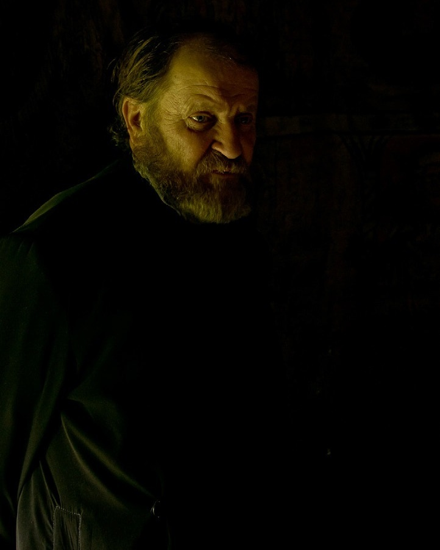

Cursul 6 - OAMENII iN FOTOGRAFIA DOCUMENTARA
"A vedea nu este indeajuns, trebuie sa simti ceea ce fotografiezi." - Andre Kertesz
"A vedea nu este indeajuns, trebuie sa simti ceea ce fotografiezi." - Andre Kertesz
Fotografiile din acest domeniu trebuie sa aiba un continut
relevant complet si sa fie impartiale, lasand privitorul
sa ia propriile decizii asupra situatiei. Fotografii, care se
ocupa cu acest tip de fotografie, sunt martorii nostrii
oculari a ceea ce se intampla in lume. Ei iti folosesc
cunostintele, abilitatile si experienta, pentru a ne
arata partea veridica, obiectiva si sincera a anumitor
imprejurari sau moduri de viata.
De retinut este faptul ca, acest tip de fotografie este
realizat atat ca si document istoric, cat si pentru a ajuta
oamenii in anumite situatii nefavorabile de ordin social,
cum ar fi foametea, saracia, razboiul, abuzul si altele
asemenea. Daca ne gandim la aceasta a doua situatie, ar
trebui sa amintim ca imaginile obsinute trebuie sa aduca
si o schimbare in viata celor fotografiati si nu numai sa
relateze niste fapte.
in portretistica, mai ales in fotografia documentara si
fotojurnalism, este foarte important sa te pasioneze
ceea ce fotografiezi, sa fii in continuu curios, iar ce faci
sa faci din suflet.
Cu cat stii mai multe despre subiect, cu atat vei putea sa
anticipezi urmatoarea miscare a acestuia si sa surprinzi
momentul decisiv.
Prin informare vei putea descoperi alte documentare
fotografice, realizate asupra aceluiasi subiect care
te intereseaza, si vei putea sa vezi cum au abordat
alsi fotografi aceeasi tema. Un astfel de studiu si o
documentare temeinica, te va ajuta sa intelegi mai bine
subiectul, credintele acestuia, relatia lui cu societatea si
mediul in care traieste.

Oamenii reactioneaza diferit in fata camerei de fotografiat, iar asta se datoreaza diferentelor culturale. Sunt locuri in care
oamenii te primesc cu bratele deschise, permisandu-ti sa le documentezi traiul, si sunt locuri in care acestia te pot privi cu
suspiciune sau te pot ignora. O buna documentare te va pregari pentru orice fel de reactie din acest punct de vedere.
in imaginile de mai jos, sunt infasisate portretele a doi oameni din doua culturi diferite, un conducator de ricsa indonezian si o
florareasa indiana. Nu am intampinat greutati in realizarea celor doua imagini, poate si pentru ca am avut grija sa cer inainte
permisiunea de a-i fotografia. (Ujung Padang, Indonezia - foto 1; Goa, India - foto 2)
Surprinderea miscarii in fotografie este esentiala,
indiferent ca ne gandim la miscarea subiectului nostru,
sau cea a elementelor din mediul in care acesta traieste.
Orice miscare surprinsa in cadru, indiferent de tehnica
folosita, va aduce un plus de dinamism.
Miscarea este redata cu ajutorul timpului de expunere,
iar decizia pe care o luam in acest caz ne poate genera
ideea de oprire a unui moment sau de redare a timpului
scurs intr-o perioada de timp.
inghetarea actiunii (P)
Atunci cand alegem sa lucram cu un timp foarte scurt
de expunere, orice miscare din fata camerei va fi
inghetata in cadru. Ideea de miscare in acest caz poate
fi redata prin surprinderea unor momente inedite in
imponderabilitate si a unor actiuni specifice.
Majoritatea momentelor expuse in acest fel sunt actiuni
pe care ochiul uman nu le percepe, iar detaliile surprinse
pot fi foarte spectaculoase. Dinamismul din imagine
este accentuat in acest caz.
intr-un portret de mediu, in care este prezent si peisajul
din jur, inghetarea actiunii poate linisti atmosfera si
poate pune accent pe detalii si mai putin pe miscare.
Pentru aceasta tema va propunem doua experimente,
atat pentru o autoevaluare a portofoliului, cat si pentru
a pune in aplicare cele studiate in aceasta lectie.
EXPERIMENT 01
Cautati in portofoliul personal si alegeti cinci imagini
care sa fie reprezentative genurilor de fotografie
studiate. Analizati imaginile, inainte de a le alege, din
punct de vedere al criteriilor legate de momentul decisiv
al declansarii, inghetarea actiunii sau redarea miscarii,
surprinderea unor factori senzoriali si a unei compozitii
care sa contureze povestea subiectului.
EXPERIMENT 02
incercati sa creati un eseu fotografic din cinci imagini,
realizate special pentru tema sau existente in arhiva
voastra personala. Urmariti firul actiunii si emotia pe
care o transmiteti privitorului. incercati sa conturati
elemente care definesc subiectul, reliefati mediul
acestuia si atmosfera, prin compozitii simple si bine
definite.
Cele mai reutite imagini cu aceste experimente trebuie
sa le incarcati in meniul de TEMA aferent lectiei. Dupa
verificare o sa primiti o evaluare a imaginilor si diverse
comentarii pentru imbunatatirea acestora
